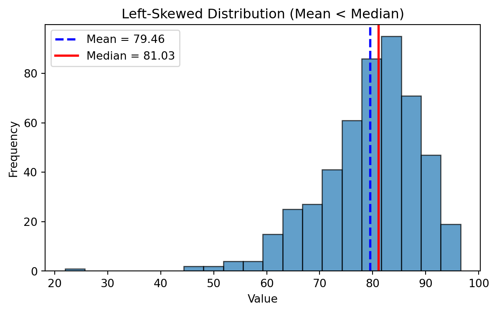

%%{init: {"theme": "default", "logLevel": "fatal"}}%%
graph TD
A["Data Types"] --> B["Qualitative (Categorical)"]
A --> C["Quantitative (Numerical)"]
B --> D["Nominal"]
B --> E["Ordinal"]
C --> F["Discrete"]
C --> G["Continuous"]
A --> H["Other Types"]
H --> I["Binary"]
H --> J["Time-Series"]
H --> K["Textual / Unstructured"]
H --> L["Spatial / Geographical"]
Data Analyst
Statistical Thinking
Why Data Types Matter
Before calculating averages or plotting charts, it’s essential to recognize what kind of data you’re working with.
The classification of a variable determines:
- Which summary statistics are meaningful?
- Which visualizations can be used?
- How relationships between variables should be interpreted?
Qualitative Data
Qualitative data describe qualities, categories, or labels rather than numbers.
| Subtype | Definition | Examples |
|---|---|---|
| Nominal | Categories with no natural order | Gender (Male/Female), City (Paris, Yerevan, Tokyo) |
| Ordinal | Categories with a meaningful order, but unequal spacing | Education Level (High < Bachelor < Master < PhD), Satisfaction (Low–Medium–High) |
Quantitative Data
Quantitative data represent measurable quantities that can be used in arithmetic operations.
| Subtype | Definition | Examples |
|---|---|---|
| Discrete | Countable numbers, often integers | Number of customers, Complaints per day |
| Continuous | Measured values within a range | Temperature, Age, Revenue, Weight |
Additional Data Types
| Type | Definition | Example Applications |
|---|---|---|
| Binary | Two possible outcomes (Yes/No, 0/1) | Subscription status, churn indicator |
| Time-Series | Observations recorded sequentially over time | Daily sales, hourly temperature |
| Textual / Unstructured | Words, sentences, or documents | Customer reviews, tweets |
| Spatial / Geographical | Location-based information | Store coordinates, delivery zones |
Flowchart
Measures of Central Tendency
Once we understand our data types, the next step is to summarize them with simple, representative numbers.
These are called measures of central tendency, and they tell us where the “center” of our data lies.
The three most common measures are:
- Mean — the average value
- Median — the middle value
- Mode — the most frequent value
Mean
The mean is the sum of all values divided by the number of observations.
| Example | Calculation |
|---|---|
| Data: 5, 7, 8, 10 | Mean = (5 + 7 + 8 + 10) / 4 = 7.5 |
Sample Mean
\[ \bar{x} = \frac{\sum_{i=1}^{n} x_i}{n} \]
Population Mean
(same, only notation is different)
\[ \mu = \frac{\sum_{i=1}^{N} x_i}{N} \]
Weighted Mean
| Type | Score | Weight (%) |
|---|---|---|
| Exam | 94 | 50 |
| Project | 92 | 35 |
| Homework | 100 | 15 |
(Weights do not need to add up to one!)
\[ \bar{x} = \frac{\displaystyle \sum_{i=1}^{n} (w_i x_i)} {\displaystyle \sum_{i=1}^{n} w_i} \]
Sample Mean Example
When to Use:
- Conveinent measurement clear to everybody - Works well with continuous or discrete numerical data.
- Sensitive to outliers (extreme values can distort the result).
Given the 5 observations:
\[ \bar{x} = \frac{\sum_{i=1}^{5} x_i}{5} = \frac{14.2 + 19.6 + 22.7 + 13.1 + 20.9}{5} = \frac{90.5}{5} = 18.1 \ \]
\[ \mu = \frac{\sum_{i=1}^{5} x_i}{5} = \frac{300 + 320 + 270 + 210 + 8{,}000}{5} = \frac{9{,}100}{5} = 1{,}820 \]
Median
The median is the value that separates the dataset into two equal halves.
Steps to calculate:
- Order the data from smallest to largest.
- If the number of observations is odd → middle value.
- If even → average of the two middle values.
| Example | Calculation |
|---|---|
| Data: 2, 5, 7, 9, 12 | Median = 7 |
| Data: 3, 5, 8, 10 | Median = (5 + 8)/2 = 6.5 |
Mode
The mode is the value that appears most often.
| Example | Calculation |
|---|---|
| Data: 2, 3, 3, 4, 5, 5, 5, 7 | Mode = 5 |
When to Use:
- Ideal for categorical or discrete data.
- A dataset can have: - One mode → unimodal
- Two modes → bimodal
- More than two → multimodal
Comparison of Mean, Median, and Mode
| Measure | Best For | Sensitive to Outliers? | Data Type | Example Context |
|---|---|---|---|---|
| Mean | Symmetrical distributions | Yes | Continuous, Discrete | Average income |
| Median | Skewed distributions | No | Continuous | Typical housing price |
| Mode | Categorical / Repeated values | No | Nominal, Ordinal | Most common product category |
Frequency Distributions
Visual Insight:
- In a perfectly symmetrical distribution → Mean = Median = Mode
- In a right-skewed distribution → Mean > Median > Mode
- In a left-skewed distribution → Mean < Median < Mode
Symmetric Distribution
Mean ~ Median

Left Skewed Distributions

Right Skewed Distributions

Symmetric, Left-Skewed, and Right-Skewed Distributions

Better Visual

Measures of Variability
Measures of Variability
- Range
- Variance
- Standard Deviation (SD)
Range
\[ \text{Range = Highest Value - Lowest Value} \]
- Think about where is it applicable?
- Are there any limitations
Variance
Sample Variance:
\[ s^{2} = \frac{\sum_{i=1}^{n} (x_i - \bar{x})^{2}}{n - 1} \]
Population Variance
\[ \sigma^{2} = \frac{ \displaystyle \sum_{i=1}^{N} (x_i - \mu)^{2} }{ N } \]
Standard Deviation
Sample Standard Deviation (Standard Error)
\[ s \;=\; \sqrt{s^{2}} \;=\; \sqrt{ \frac{ \displaystyle \sum_{i=1}^{n} (x_i - \bar{x})^{2} }{ n - 1 } } \]
Population standard deviation
\[ \sigma = \sqrt{ \frac{ \displaystyle \sum_{i=1}^{N} (x_i - \mu)^{2} }{ N } } \]
How to compare variability?
In which cases you can compare standard deviations?
| Box | Sample 1 | Sample 2 |
|---|---|---|
| Box 1 | 14.2 | 18.2 |
| Box 2 | 19.6 | 17.9 |
| Box 3 | 22.7 | 18.1 |
| Box 4 | 13.1 | 18.1 |
| Box 5 | 20.9 | 18.2 |
| Mean | 18.1 | 18.1 |
| Standard deviation | 4.23 | 0.12 |
Visual Comparison of Variability

When variability is bad?
- When consistency and quality control are important
- Product weights, drug dosages, machine precision
- Delivery times, service response times
- Financial risk (greater uncertainty)
When variability is good?
- Biological diversity and adaptability
- Marketing segmentation & A/B testing
- Creativity and innovation
- Investments seeking higher upside
- Identifying top performers (sports, hiring)
When variability is neutral?
- Natural randomness (weather, height, sampling variation)
Variability is not inherently good or bad—its value depends on what you are trying to achieve.
Why \(N-1\)?
A degree of freedom (df) is an independent piece of information that can vary freely.
Whenever we estimate a parameter from the sample, we introduce a constraint.
Each constraint removes one degree of freedom.
The universal rule is:
\[ df = n - \text{(number of estimated parameters)}. \]
During the mean estimation, since we have one constraint we remove only 1 hence
\[ df = n - 1 \]
Coefficient of Variation (Normalization)
The coefficient of variation (CV) is a measure of relative variability.
It allows us to compare the variability of two datasets even when their units or scales differ.
Data
| Date | Nike | |
|---|---|---|
| September 14, 2012 | 48.32 | 709.68 |
| October 15, 2012 | 47.81 | 740.98 |
| November 15, 2012 | 45.42 | 647.26 |
| December 14, 2012 | 48.46 | 701.96 |
| January 15, 2013 | 53.64 | 724.93 |
| February 15, 2013 | 54.95 | 792.89 |
| Mean | 49.77 | 719.62 |
| Standard deviation | 3.70 | 47.96 |
\[ \text{CV} = \frac{s}{\bar{x}} \times 100 \]
Where:
- \(s\) = standard deviation
- \(\bar{x}\) = mean
- CV is expressed as a percentage
Nike
\[ \text{CV}_{\text{Nike}} = \frac{3.70}{49.77} \times 100 \approx 7.4\% \]
\[ \text{CV}_{\text{Google}} = \frac{47.96}{719.62} \times 100 \approx 6.7\% \]
Z-score
Number of standard deviations that particular value is farther from the mean of its population or sample:
Population:
\[ z = \frac{x - \mu}{\sigma} \]
Sample:
\[ z = \frac{x - \bar{x}}{s} \]
=STANDARDIZE(x, mean, standard_deviation)Suppose we have:
- x = 540
- mean = 776.3
- standard deviation = 385.1
Rule of Thumb for identifying outliers: Data values that have z-scores above +3 and below -3 can be categorized as outliers.